[!TIP] Ongoing and occasional updates and improvements.
RHDH (redhat developer hub) integration with ADO (azure devops)
In this document, we will show you how to integrate
rhdh with ado (azure devops), and use
azure sso to login to rhdh. As the
time of writing, the rhdh version is
1.3.1, we will use helm to install
rhdh in ocp4.16.
The architecture is like this:
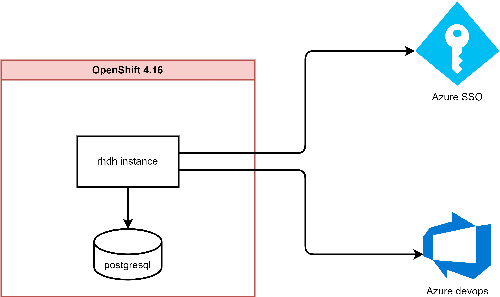
[!NOTE] Azure make changes from time to time, so the steps may not be exactly the same as the time of writing, but the general idea is the same.
pre-requisites
This document assumes you have the following pre-requisites:
- working connected
ocp4.16cluster - azure account
azure sso setup
There is official document for azure sso setup, you can refer to this link.
We need to create 2 app registration in azure
portal, one for sso login and one for azure devops
integration.
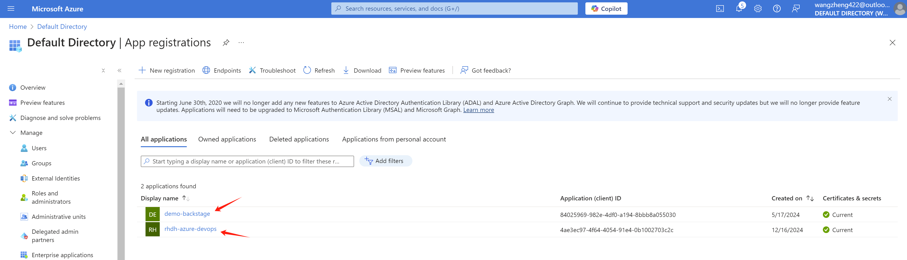
Both app registration is created with default
settings.
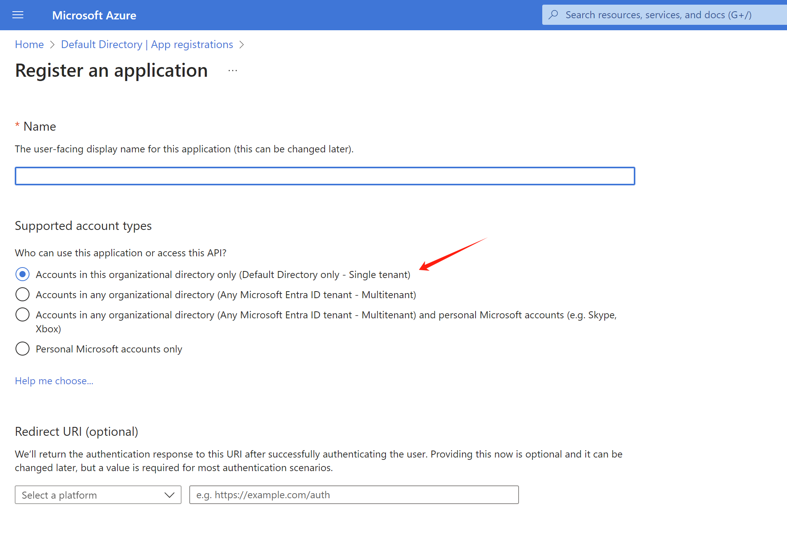
For the sso login demo-backstage
app registration, we set the redirect url to
https://redhat-developer-hub-demo-rhdh.apps.demo-01-rhsys.wzhlab.top/api/auth/microsoft/handler/frame.
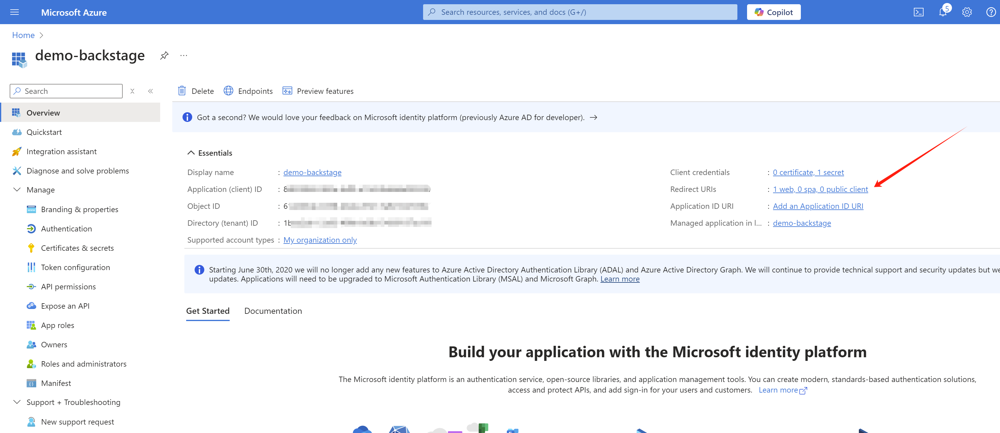
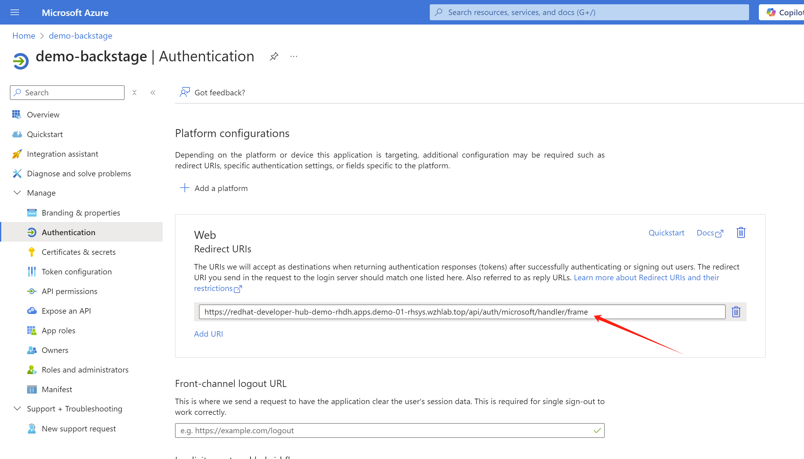
And set the sso login demo-backstage
app registration permission, based on the offical
documents.
- offline_access
- openid
- profile
- User.Read
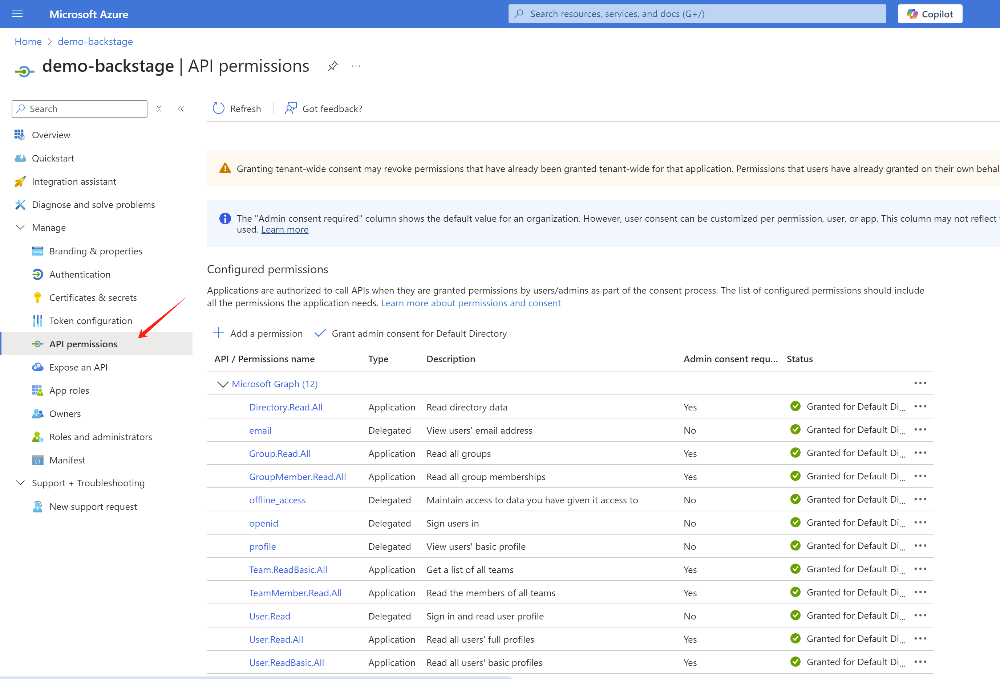
The app registration for azure devops
integration is rhdh-azure-devops, and we keep it as
the default settings.
[!NOTE] Write down the
tenant id,client idandclient secretfor bothapp registration, we will use it in the next step.
And for demo purpose, we create several group and users
- L1Support(group)
- l1.u01(user)
- l1.u02(user)
- L2Support(group)
- l2.u01(user)
- l2.u02(user)
- L3Support(group)
- l3.u01(user)
- l3.u02(user)
azure devops setup
Sometimes, you need to login to
https://dev.azure.com/ to switch to correct
directory.
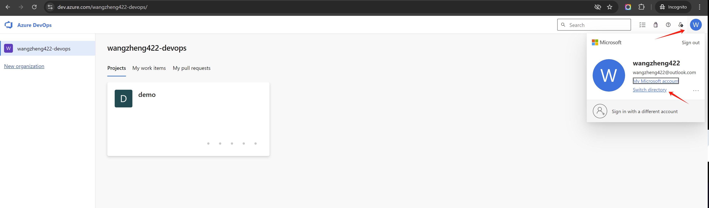
You can also access azure devops profile setting page, to have a overview of your organization and projects.
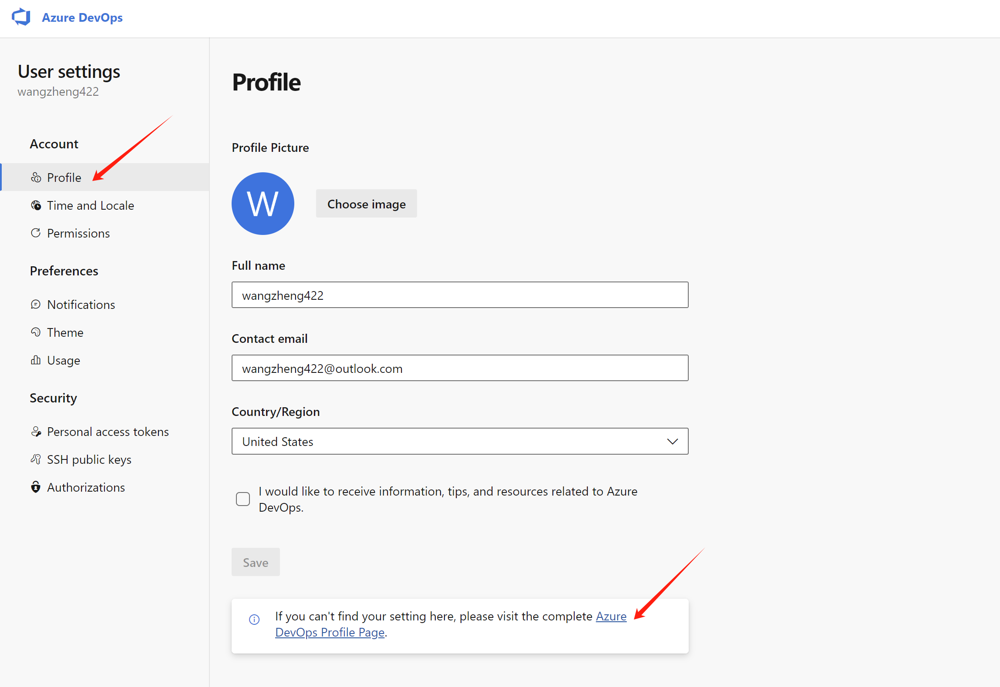
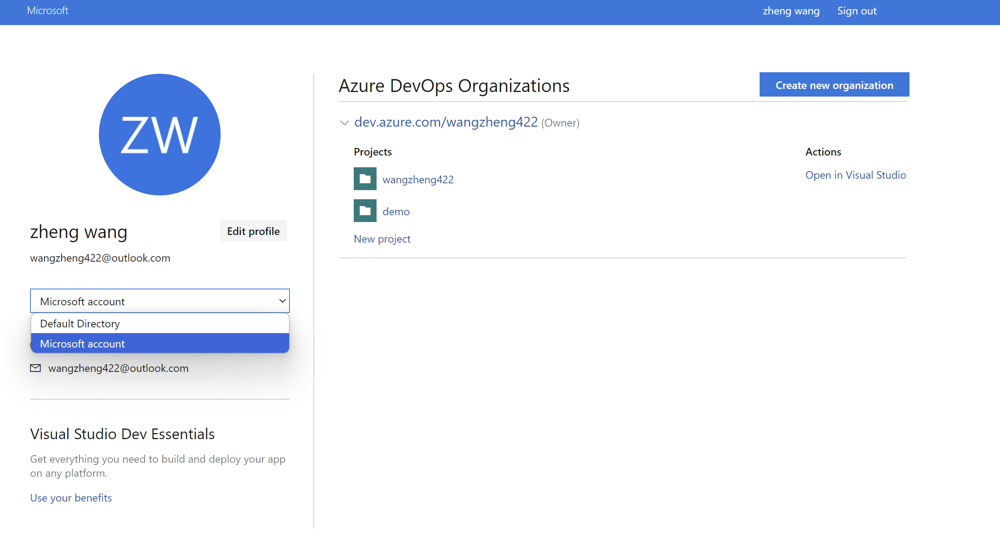
Now, it is time to create a project under your
organization.
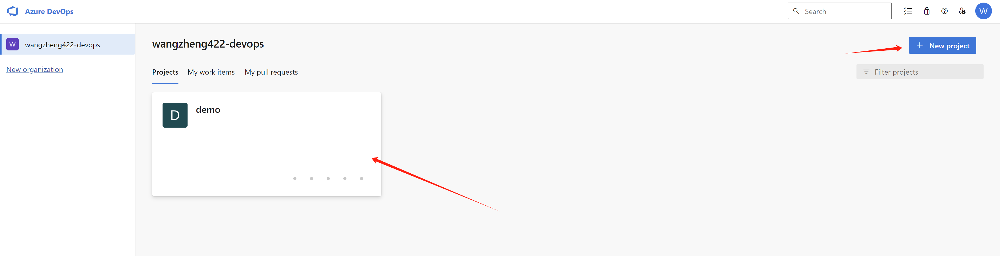
And in organization settings, you can find the
users settings, add the
app registration rhdh-azure-devops as
a user, and give it project administator
permission.
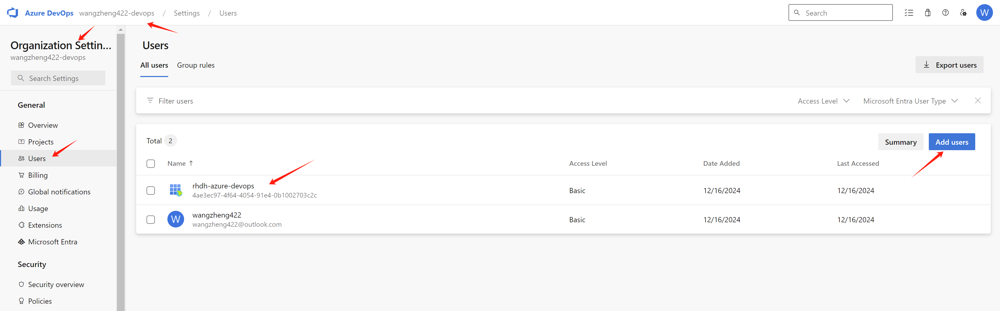
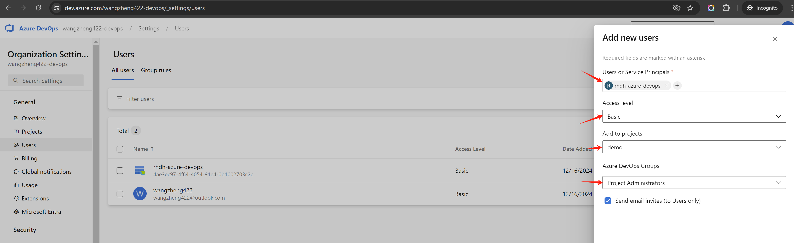
Install Code Search Feature for Azure devops
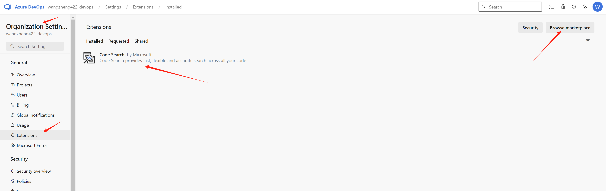

Now, we finished the azure devops setup, and we can move to the next step.
rhdh setup
We needs some pre-installed plugins related with azure sso and ado, for detailed information, following the offical docs.
For configuration around azure ado, here is upstream docs.
For configuration around azure sso, here is upstream docs.
As the time of writing, we install rhdh with version
1.3.1, and install using helm. You can patch the
helm config like this:
global:
# patch the base url
clusterRouterBase: apps.demo-01-rhsys.wzhlab.top
# patch for plugins
dynamic:
plugins:
# for azure and ado (azure devops)
# Azure Devops UI
# redhat version is too old (0.1.14 by the time of writing), has some compatibility issue with azure devops
# so we switch to upstream version
- package: ./dynamic-plugins/dist/backstage-plugin-scaffolder-backend-module-azure-dynamic
disabled: true
# https://www.npmjs.com/package/@backstage/plugin-scaffolder-backend-module-azure?activeTab=versions
- package: '@backstage/plugin-scaffolder-backend-module-azure@0.2.3'
disabled: false
integrity: sha512-ZXYsvjPHImrc+qnS4uJjLJ23TUjduVzbQeN9BIIyr+EHMHOWujwFc81Y5F9Gb5dA7ui1o4N5S92ukHQ/9+vCkA==
# Azure Devops
- package: ./dynamic-plugins/dist/backstage-plugin-azure-devops
disabled: false
# Azure Devops
- package: ./dynamic-plugins/dist/backstage-plugin-azure-devops-backend-dynamic
disabled: false
# MS Graph
# this is used to import users from azure ad.
- package: ./dynamic-plugins/dist/backstage-plugin-catalog-backend-module-msgraph-dynamic
disabled: false
upstream:
backstage:
# patch for app config
extraAppConfig:
- configMapRef: app-config-rhdh
filename: app-config-rhdh.yaml
# patch for secrets
extraEnvVarsSecrets:
- wzh-rhdh-credentials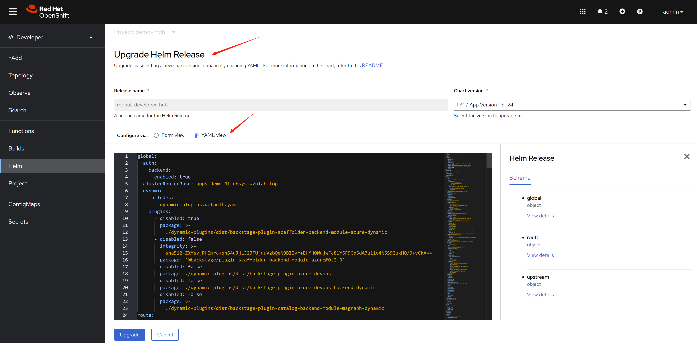
After you patch the helm config, the rhdh will deploy a new version, but it will not process, because the new config depends on a configmap, which is not existed right now. We will craete it in the next step.
Set the wzh-rhdh-credentials secret with the
bash
NAMESPACES="demo-rhdh"
# create secret based on env variable
# the log level is set to debug, so we can debug the rhdh easily, we can remove it in production.
# the tls_reject
oc delete secret wzh-rhdh-credentials -n $NAMESPACES
oc create secret generic wzh-rhdh-credentials -n $NAMESPACES \
--from-literal=AZURE_TENANT_ID=$AZURE_TENANT_ID \
--from-literal=AZURE_CLIENT_ID=$AZURE_CLIENT_ID \
--from-literal=AZURE_CLIENT_SECRET=$AZURE_CLIENT_SECRET \
--from-literal=AZURE_DEVOPS_TENANT_ID=$AZURE_DEVOPS_TENANT_ID \
--from-literal=AZURE_DEVOPS_CLIENT_ID=$AZURE_DEVOPS_CLIENT_ID \
--from-literal=AZURE_DEVOPS_CLIENT_SECRET=$AZURE_DEVOPS_CLIENT_SECRET \
--from-literal=AZURE_DEVOPS_ORG=$AZURE_DEVOPS_ORG \
--from-literal=SESSION_SECRET=`openssl rand -hex 32` \
--from-literal=NODE_TLS_REJECT_UNAUTHORIZED=0 \
--from-literal=LOG_LEVEL=debug
# create app config
oc delete configmap app-config-rhdh -n $NAMESPACES
cat << EOF > ${BASE_DIR}/data/install/app-config-rhdh.yaml
---
kind: ConfigMap
apiVersion: v1
metadata:
name: app-config-rhdh
data:
app-config-rhdh.yaml: |
app:
title: WZH Developer Hub
auth:
# environment: production
# using development, will give you guest login options :)
environment: development
session:
secret: \${SESSION_SECRET}
providers:
microsoft:
production:
clientId: \${AZURE_CLIENT_ID}
clientSecret: \${AZURE_CLIENT_SECRET}
tenantId: \${AZURE_TENANT_ID}
development:
clientId: \${AZURE_CLIENT_ID}
clientSecret: \${AZURE_CLIENT_SECRET}
tenantId: \${AZURE_TENANT_ID}
guest:
dangerouslyAllowOutsideDevelopment: true
userEntityRef: user:default/guest
signInPage: microsoft
# use in no-production, to allow all users to login
# dangerouslyAllowSignInWithoutUserInCatalog: true
integrations:
azure:
- host: dev.azure.com
credentials:
# - personalAccessToken: \${AZURE_DEVOPS_PERSONAL_ACCESS_TOKEN}
# organizations:
# - \$AZURE_DEVOPS_ORG
- clientId: \${AZURE_DEVOPS_CLIENT_ID}
clientSecret: \${AZURE_DEVOPS_CLIENT_SECRET}
tenantId: \${AZURE_DEVOPS_TENANT_ID}
# organizations:
# - \$AZURE_DEVOPS_ORG
catalog:
rules:
- allow: [Component, System, API, Resource, Location, Template]
locations:
- target: https://github.com/wangzheng422/red-hat-developer-hub-software-templates/blob/wzh-hack/wzh-data/org.yaml
type: url
rules:
- allow: [Group, User]
- target: https://github.com/wangzheng422/red-hat-developer-hub-software-templates/blob/wzh-hack/templates/azure/dotnet-frontend/template.yaml
type: url
rules:
- allow: [Template]
providers:
microsoftGraphOrg:
providerId:
target: https://graph.microsoft.com/v1.0
tenantId: \${AZURE_TENANT_ID}
clientId: \${AZURE_CLIENT_ID}
clientSecret: \${AZURE_CLIENT_SECRET}
# queryMode: advanced
# user:
# loadPhotos: true
userGroupMember:
filter: >
displayName eq 'L1Support' OR displayName eq 'L2Support' OR displayName eq 'L3Support'
group:
filter: >
displayName eq 'L1Support' OR displayName eq 'L2Support' OR displayName eq 'L3Support'
schedule:
frequency: { hours: 1 }
timeout: { minutes: 50 }
# frequency: { minutes: 10 }
# timeout: { minutes: 5 }
azureDevOps:
yourProviderId: # identifies your dataset / provider independent of config changes
organization: \$AZURE_DEVOPS_ORG
project: '*'
repository: '*' # this will match all repos
path: /catalog-info.yaml
schedule: # optional; same options as in TaskScheduleDefinition
# supports cron, ISO duration, "human duration" as used in code
frequency: { minutes: 30 }
# supports ISO duration, "human duration" as used in code
timeout: { minutes: 3 }
permission:
enabled: false
enabled:
azure: true
azureDevOps: true
microsoftGraphOrg: true
microsoft: true
permission: false
EOF
oc create -f ${BASE_DIR}/data/install/app-config-rhdh.yaml -n $NAMESPACES
# scale-in and scale-out to restart the rhdh, to apply the new config.
oc scale deployment redhat-developer-hub --replicas=0 -n $NAMESPACES
oc scale deployment redhat-developer-hub --replicas=1 -n $NAMESPACES
# if you want to see the logs and debug
POD_NAME=$(oc get pods --selector=app.kubernetes.io/instance=redhat-developer-hub --output=jsonpath='{.items[0].metadata.name}')
oc logs $POD_NAME | grep --color=always -i 'error' | awk '{print; print "";}'
rhdh demo run through
Login to rhdh, and try to create based on the template.
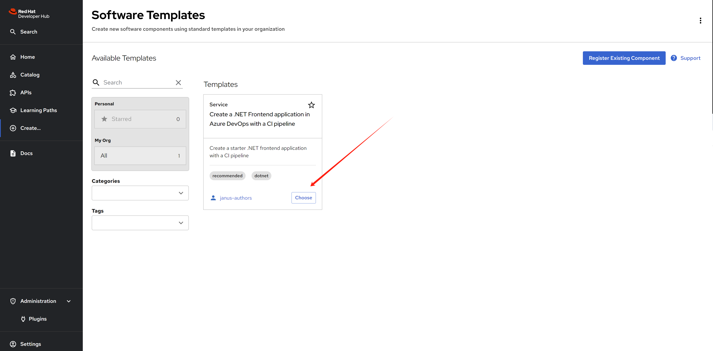
Input the parameter that defined in the template, in the
first page, there is based information for azure devops, which
is organization, project, and the name
of the repository which will be created.
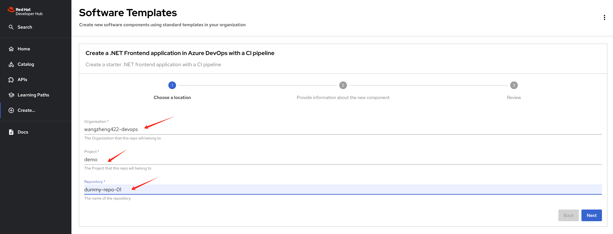
In the next page, fill in the component information, like
title, owner which is a azure user,
and system.
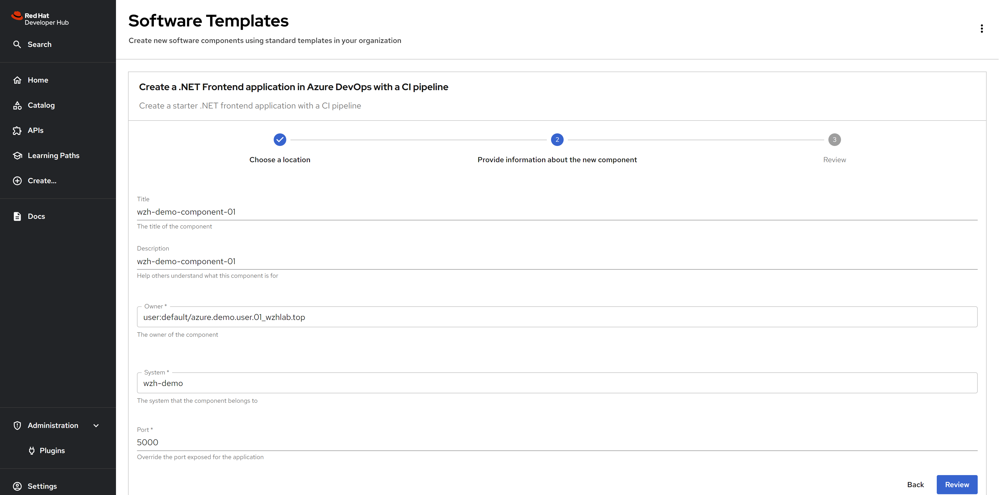
Review the settings, and click the create
button. It will try to create the azure devops repository.
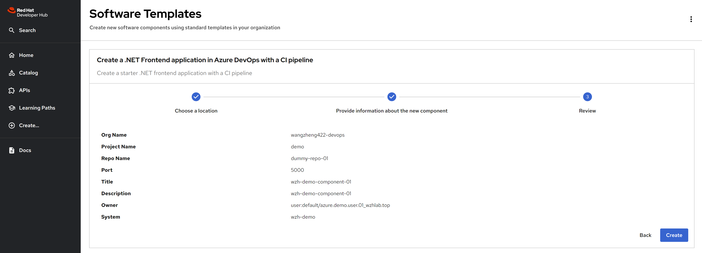
After the creation, you can see the repository
is created successfully.
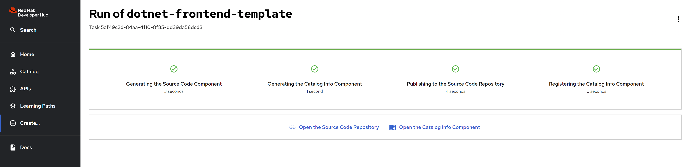
you can also see the repository is created in
the azure devops.
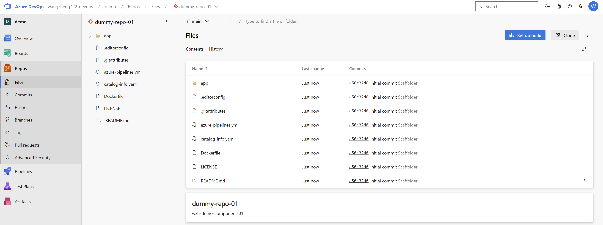
source code highlight
Here is the example of the catalog-info.yaml
file, which is created in the azure devops repository. The
source code is here, but it is templatized, you can see the
result after the creation here, to help you understand the
structure.
apiVersion: backstage.io/v1alpha1
kind: Component
metadata:
name: dummy-repo-01
title: wzh-demo-component-01
description: wzh-demo-component-01
annotations:
backstage.io/kubernetes-id: dummy-repo-01
backstage.io/techdocs-ref: dir:.
dev.azure.com/project-repo: demo/dummy-repo-01
dev.azure.com/host-org: dev.azure.com/wangzheng422-devops
spec:
type: website
system: wzh-demo
lifecycle: production
owner: user:default/azure.demo.user.01_wzhlab.toprun the azure devops pipeline
After the repository is created, you can create a pipeline in the azure devops to build and deploy the application.
For free user, we need to change the project/repo into public to run the pipeline with self-host agent.
First we need to active the public project in
our organization.
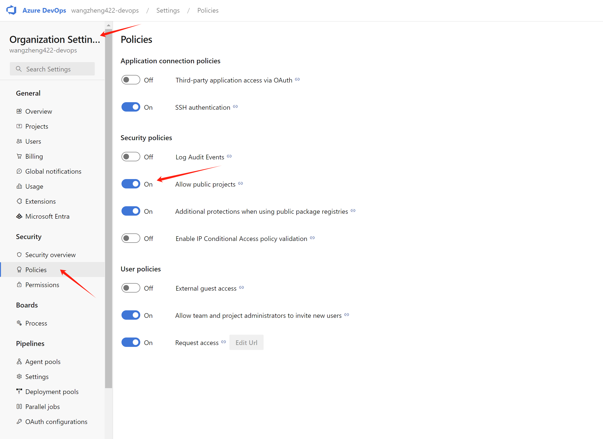
Next, we go to a project under the organization,
and change the project’s visibility into
public.
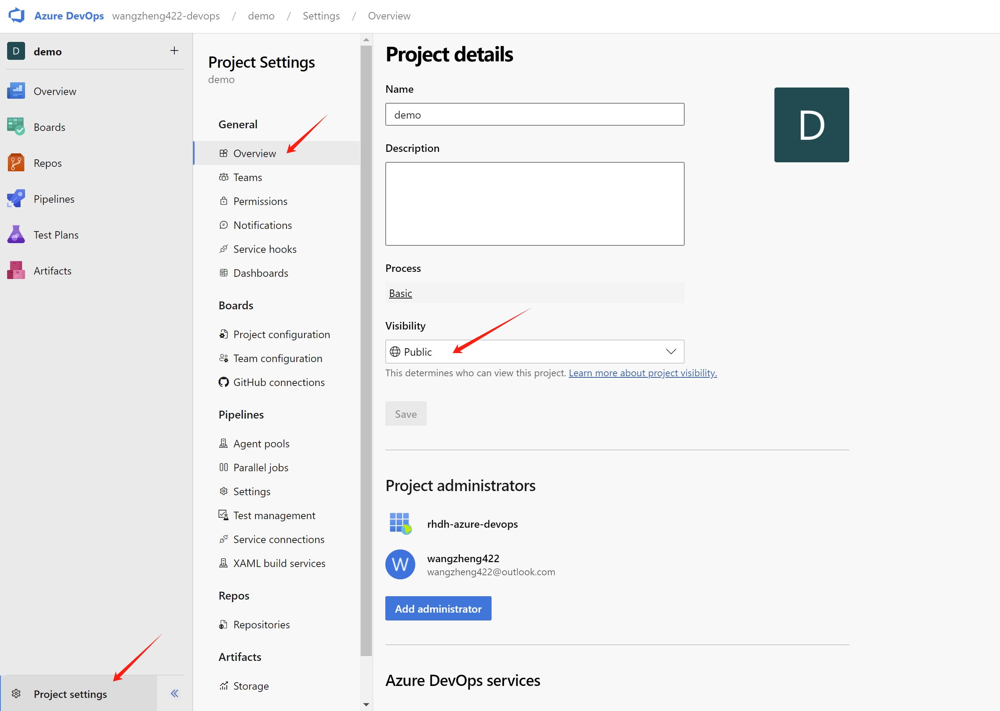
To run with self-host agent, we need to add agent into a
agent pool, we use the build-in agent pool
Default.
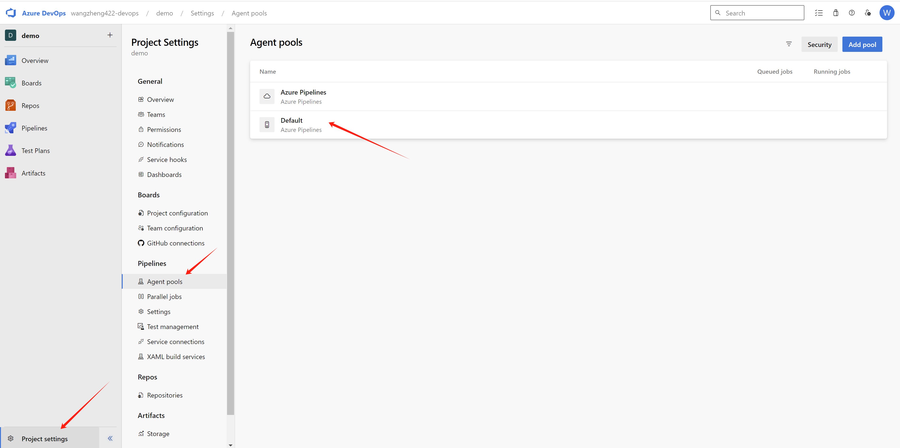
And click the new agent, and follow the steps to
install the agent on your machine. Here we can see an agent is
added into the pool.
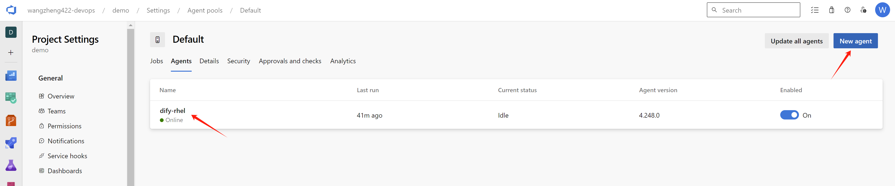
The detailed steps to install the agent is popped up.
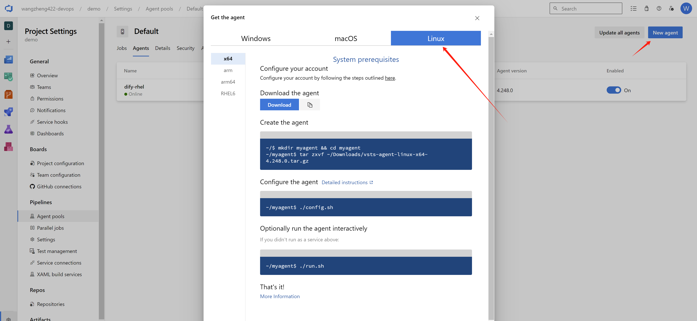
If you use rhel9 as the agent base os, you can use the following command to install the agent:
# you need to install docker ce as systemd service
# because our pipeline definition needs docker daemons.
dnf config-manager --add-repo https://download.docker.com/linux/rhel/docker-ce.repo
dnf install -y docker-ce docker-ce-cli containerd.io docker-buildx-plugin docker-compose-plugin
systemctl enable --now docker
# add user ado to run the agent
useradd -m ado
usermod -aG docker ado
su - ado
mkdir -p ~/azure
cd ~/azure
wget https://vstsagentpackage.azureedge.net/agent/4.248.0/vsts-agent-linux-x64-4.248.0.tar.gz
tar zvxf *
./config.sh
# ......
# Server URL : https://dev.azure.com/<your organization>
# PAT : <your personal access token>
# agent pool : <Default>
# ......
./run.shAfter created agent, we need to create quay.io’s
credential in the azure devops, which is used by the pipeline to
upload the container image. In azure devops, it is
service connections. Open
project setting, and under the
pipeline, click service connections,
and click new service connection,
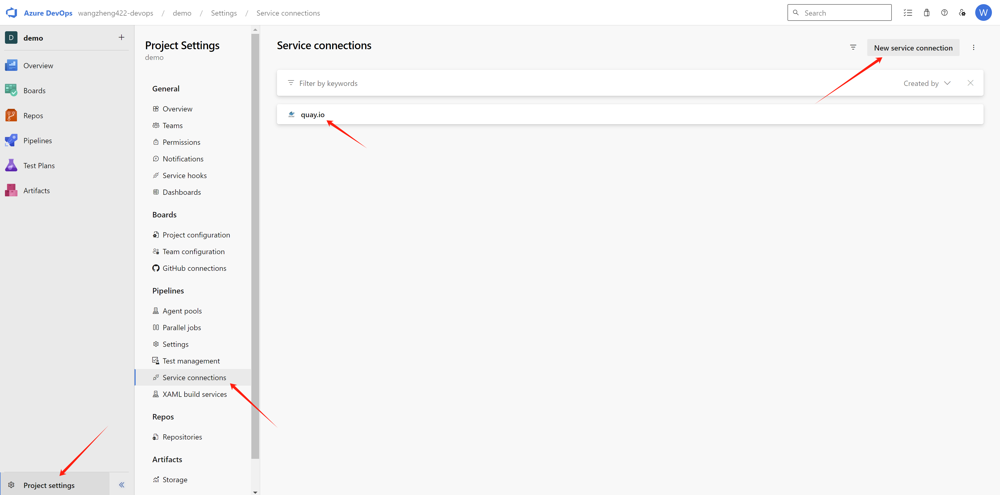
and select docker registry.
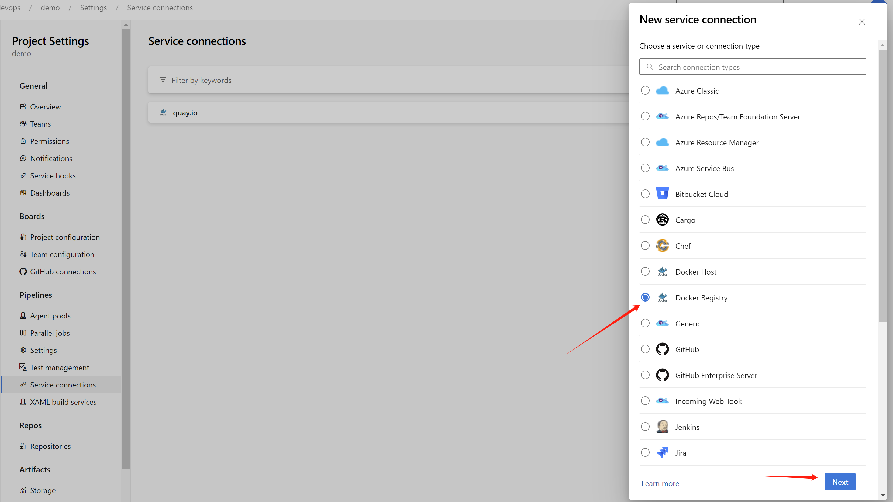
In the next step, input the following information:
- Docker Registry:
quay.io - Docker ID: your quay.io username, a robot account is recommended, which is more secure.
- Docker Password: your quay.io password
- Service connection name:
quay.io
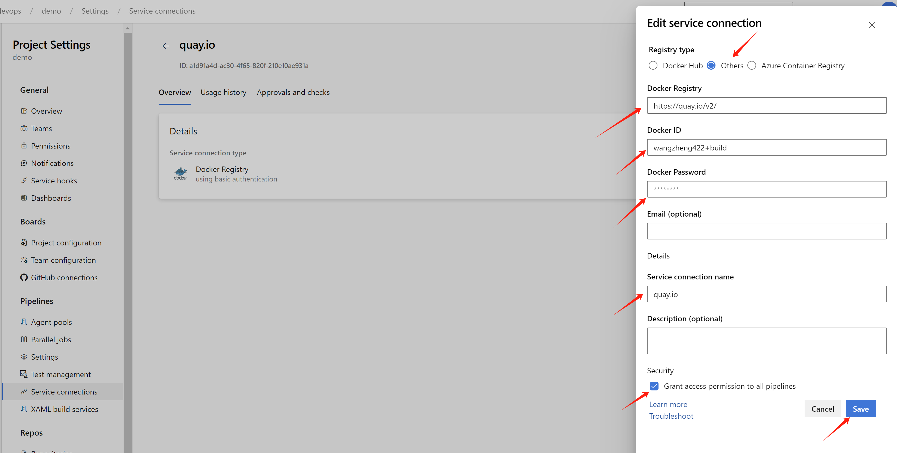
Now, we are ready to run the pipeline, first, we need to
create a pipeline in the azure devops, click
pipelines in the left menu, and click
new pipeline.
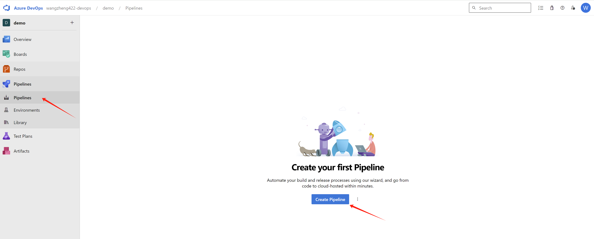
Select azure repos git, because our pipeline
definition file is in the azure devops repository.
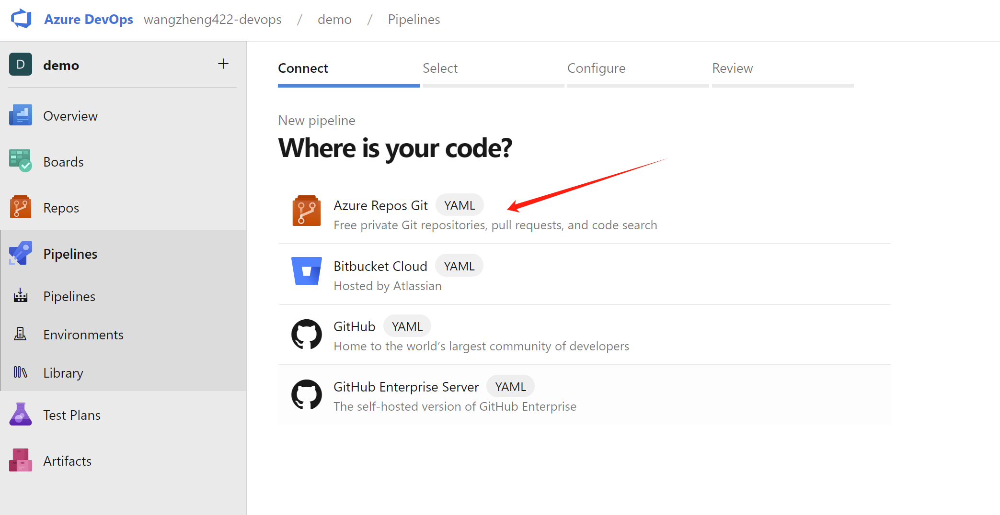
Next, select the repository that contains the pipeline definition file.
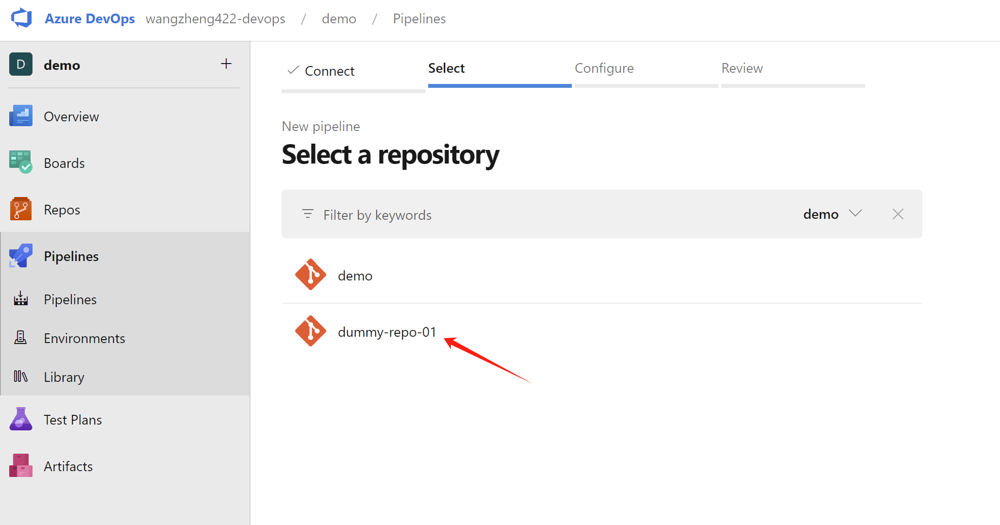
The pipeline definition file is
azure-pipelines.yml, which is in the root of the
repository, and is loaded automatically. Click run
will run and save the pipeline.
You can check the source code of the
azure-pipelines.yml file here, and change it based
on your own env:
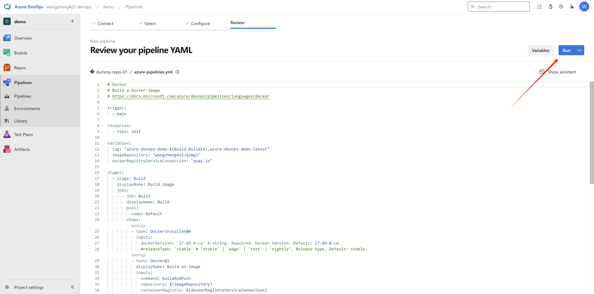
Wait a moment, it will trigger a build on the self-host
agent, and the build will be successful. The container image
will be uploaded to quay.io. Here is the build
result.
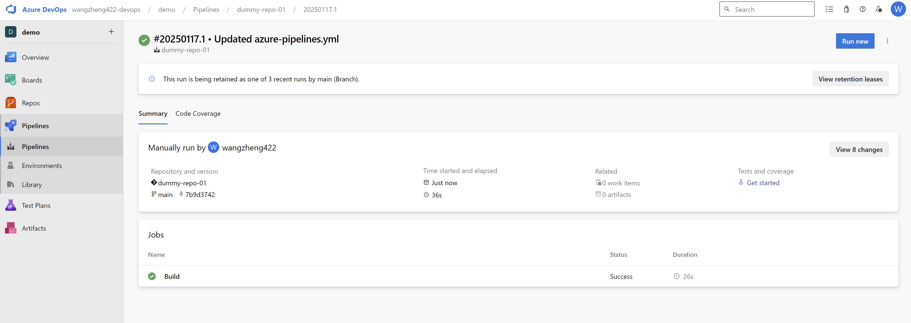
And we can see the container image is created on
quay.io.
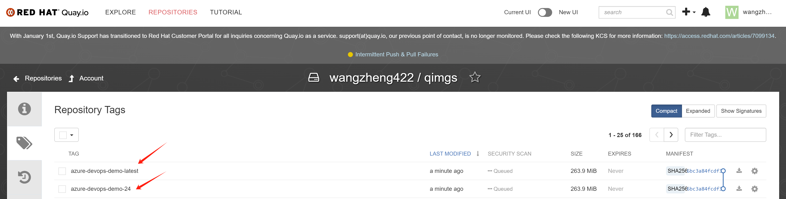
Deploy the container image
quay.io/wangzheng422/qimgs:azure-devops-demo-latest
on openshift, expose the service (the app port is default to
5000), and access the application.
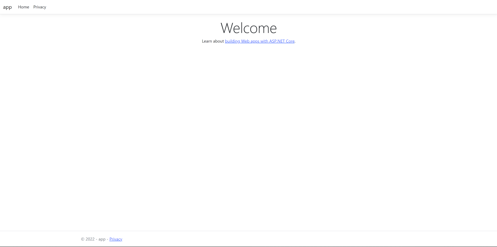
The application is running on openshift, and we can access it via the route. It is a very simple dotnet application.